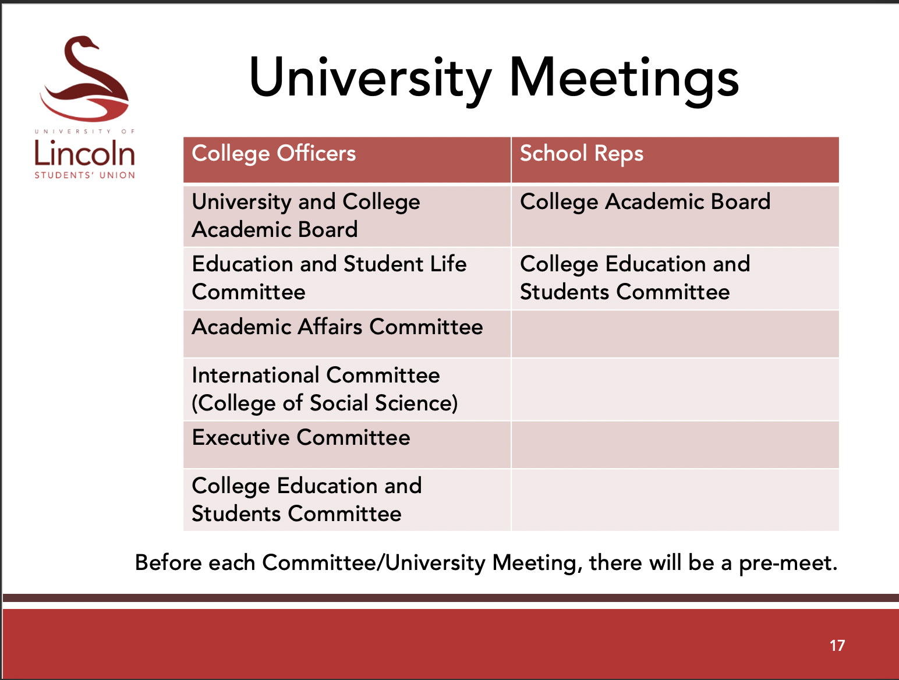
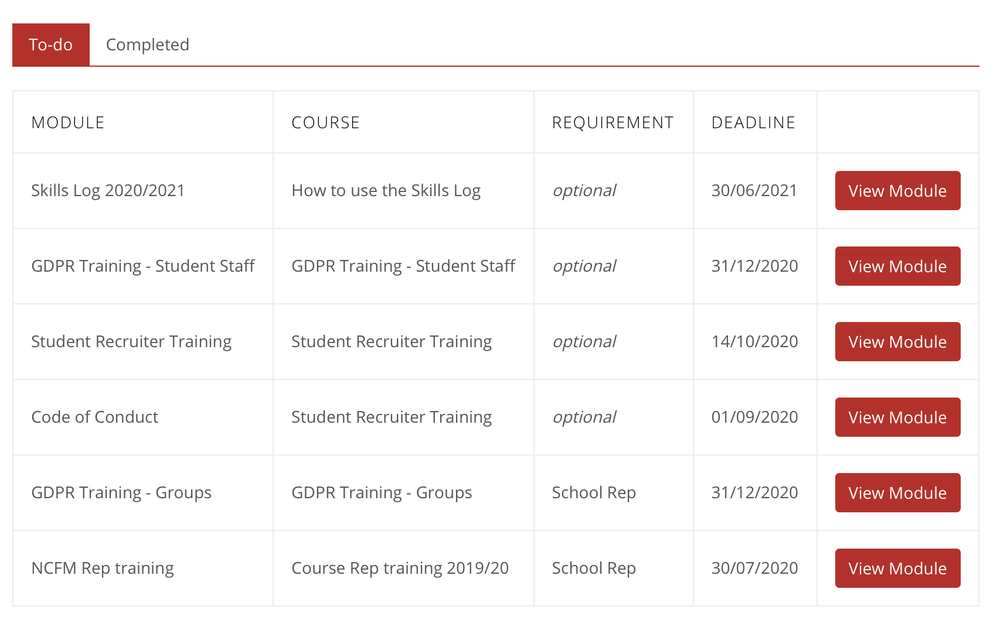

By Garry Clawson
June 20, 2020
Some of you may have wondered what the process is like once you have been voted as School Rep. Although the process takes place every year it is not very clear what goes on and when and unfortunately the SU doesn't provide a time line to help, which can leave any new reps in ... limbo. I hope to try and resolve this and give a little bit of clarity about what the first 30 days of being a student rep is like and what it has so far involved.
23 March 2020 This was the day I applied for the open position of SoCS School Rep. This was part of the bye elections as no one had stood for the position in the election earlier in the year. As soon as I sent in my application I announced it on Discord and loaded my application (called a Manifesto) so that others could see who and why they could vote for me.
27 March 2020 This was the day that the results for the bye elections for the open positions at the SU were announced. The role formally starts on the 2nd July (it is a year long position ending on the 1st July 2021), but having this bit of time allows you to catch up with the current school rep and ask questions. I had previously applied for the open role through the SU website by a process of 'nominating yourself' (which feels weird) but overall it was very simple and just required a image of the candidate and a few sentences of what you want to achieve. Here is my Manifesto.
5 June 2020 This is really when it all started. One of the first people in the SoCS to reach out to me and introduce themselves was the new Deputy Head of School of Computer Science, Salah Al-Majeed. Salah gave a really nice introduction into his background (I think at this time Salah had been at the SoCS for only a few weeks) and we spent lots of time talking about the day to day general student experience and what high level things could do with improving. A couple of the points raised were assignment feedback and getting all students more engaged with all the things SoCS offers. Salah and I agreed to meet monthly on 3rd Wednesday of the month.
11 June 2020 I first initiated contact (via email) with Chris Headleand (SoCS Director of Teaching & Learning) as early as I could so I could to start the conversation and find out a little more what the SoCS school rep role entails from a practical day to day perspective. Chris is the lead for student engagement across the college and I knew that he would have a large part to play in communication between students and the school.
14 June 2020 I received a congratulatory email back from Chris and we agreed to start a conversation using Teams. This was arranged for early the following week. Although the role did not formally start until 2nd July, trying to get as much information about was currently going on and being arranged was important. It was also important to make Chris and SoCS see that the role was filled and that I was ready to provide support immediately.
23 June 2020 This was my first meeting with Chris Headleand regarding getting up to speed with what's going on in the school; trying to get as much detail as possible about next year's plans (due to Covid-19) as well as make general introductions. However, one of the most important aspects of this meeting was to get an understanding exactly what the SoCS wanted from the School rep and to get an understanding of what made a School Rep successful from the SoCS perspective. We spoke for about 1 hour over Teams which was a great introduction to the role. We agreed to meet every week on a Friday to discuss what is going on from a student perspective, and to get feedback on what the school is doing.
23-28 June 2020 I was aware that July was quickly coming up and I wanted to find out who the course reps were. One of the best ways to do this is to ask. The best place to ask tends to be the Computer Science Society Discord server. So this is what I did. Unfortunately the Student Union won't give you any details of any course reps until you complete their GDPR exam, however, the discord server worked well and I found 4 students who had been nominated course reps for the 20/21 academic year. 2 of these were returning reps from the previous year which was great.
29 June 2020 I was today allowed coveted access to the 'reps' channel on the CSS discord. Unless you participate in the CSS discord this may not be known to many people, so is a nice tip. The CSS discord has historically been the place where communication occurs between all course reps, school reps as well as society leaders. Although it is not formal chat it does a good job of reaching out to everyone.
30 June 2020 Today was the first day that I had been formally contacted by the Lincoln SU to be given any indication of what is expected of me as a school rep. This was a little odd as the roles have been around for so long that I had thought they would have some induction process that involves the period of time between March and July. The contact today however was useful as it involved several invites for the 2nd July which was a whole day of training (well, 09:00 - 15:00 with breaks). This training was titled 'PTO training' with PTO standing for Part Time Officer, which is what the School Rep role is. The PTO training covered 4 keys elements:
- Introduction to the SU and Your Role as an Officer
- Wellbeing and Inclusivity
- Introduction to Senior Reps, ideas for engagement, creation of a small welcome video and what training is required
- Utilising Marketing
The training material can update each year and to see this training presentation please click on the item links above. Overall, the training provided a great overview of the role the SU plays, its status as well as the expectations and support offered to the student leaders.
2 July 2020 I had taken part in the PTO training today with around 35 participants from across the University taking part (maybe even 50-60 people). This training was provided to all School Reps and gave an overview (the 4 sections above) of what a School Rep position was about. It was completed via Teams but normally this would be done face-to-face in the Engine Shed. This training was facilitated by Georgia Petts who is the current SU VP of Education. Also, once this training was complete I would then have access to a very rough org structure of who could help with what in the SoCS.
One of the things presented was the sort of meetings we as School Resp would be expected to attend (on behalf of the students); you can see an outline of these meetings below and this gives a good indication of where an issue can be formally raised if it cannot be resolved informally through the engagement leads channels.
3 July 2020 I had now completed all the PTO training, the baton had been handed over to me from the previous school rep and I was a fully fledged School Representative. I had decided a few weeks ago that as soon as this was the case I would send out an introductory email to the full year groups across SoCS. This was important to get done as soon as possible because many students would very shortly be leaving as the 3 July was the last day for year group academic results. After results day, I think 95% of students don't read their emails again until September!
To arrange this, a week before I had made contact with SoCS Admin to inquire about the process of sending year wide emails and they informed me that they would be able to do this for me on my behalf. This was great news as it added a formality to it as well as ensuring it reached every student. I requested that this be a monthly email so that the SoCS reps team could keep all students up to date and help drive feedback that would help inform school improvements. They again said this was no problem. The first introduction email that was sent to all Y1, 2 & 3 students in SoCS is below:

6 July 2020 The end of the introduction period was insight. I had a few more things to complete (from the PTO training overview) before I could gain formal access to the course reps details and make a formal introduction. It seems pretty crazy at this stage that the school rep does not formally know who the course reps are in the school, but this is all due to GPDR requirements.
On that basis I was sent an email on the 6th July to login into my SU account and complete the training modules. the key module being GDPR. There are 10 questions in total which are straight forward so it took no time at all. An overview of the training modules that needed to be completed is below. As you can see you are permitted up to December to do this which is strange because you would then not have access to course rep details for that period of time (or be allowed to handle information).
7 July 2020 Today was the day I got formal access to the formal computinrep@lincolnsu.com email. I had completed all the required training, and was now allowed to see who the course reps were. I found 5 (one more than I knew of) great individuals who I know will make a great team! At the time of writing this consists of 1 x 3rd Year rep and 4 x 2nd Year reps.
The first thing I did was ensure every email was responded to and any new invite was accepted where required. There were about 200 emails to go through covering a range of topics. I had initially expected a brand new email with no history but what you get is access to the email account that all previous school reps have had. This is good for a few reasons but the first being that it gives continuity, the 2nd, it means you can see what meetings and activities were completed before you got the role, which is really helpful.
10 July 2020 Once I had gotten familiar with everything (the account is a Google account using the @lincolnsu.com domain) I emailed all the current course reps. The formal school rep email account has a dedicated email signature that is a fancy logo and this needed changing to show the new school reps name. Emily Stow (the SU Insights and Research Coordinator) had now shared the course reps details with me. This is done using a shared document (In OneDrive) with a single list of your school course reps on with their respective names and emails.
Making as early as possible formal contact with the course reps was important to me as the new SoCS School Rep. This is because I wanted to do two things: 1) Share my commitments to them and the SoCS students, 2) Set my expectations of them as course reps and how I can help them with that. This is shared below:
My Commitment as SoCS School Rep:
- I will work super hard to make you guys as successful as possible. I want you to enjoy the role and take a lot from it.
- I will always keep you in the loop on all activities.
- I will always be open, honest and clear all times with you.
- I will always respond to questions. No question is out of bounds. Please feel free to ask anything you want.
- I will work solely to improve the experiences of students, including you.
My Expectations of your Course Reps:
- I want you to engage with your full year group as much as possible. This course rep role is as a high profile as you make it, but it is only successful if you engage.
- I want you to communicate with me. Don't ever worry that you may be sending me too many emails. I prefer more communication than less.
- I want you to know that no problem, issue or idea is too small. Please seek these out in your year groups and feed them back. Even if this is just adding slide page numbers to lectures.
- I want you to tell me when I do a bad job and when I do a good job. Your feedback on how I am doing is critical. Learning to give constructive feedback is a great skill to have.
- I want you to enjoy it. If ever you find you are not please let me know. Being a course rep should be hard work but never stressful. That is what I am here for.
13 July 2020 I had one more formal introduction to make which was to the SoCS Student Engagement Lead. This is Horia Miaor. I contacted Horia to wish him best of luck in his role of engagement lead and requested a Teams call to introduce myself and ask what future plans were regarding student engagement. We had a call the following day and it was a great first meeting. We agreed to then meet every Monday to discuss how we can improve engagement in the school and to get feedback on what is going on on that front (as well as to offer feedback).
Today & Going Forwards This brings me to today (20th July) and where my current journey is sat. Lots has happened since I started the role of SoCS school rep and the above is just a time line of what I experienced. In between these moments there has been ideas, discussion, agreements and disagreements about making sure the student experience is as best as it can be. One of the things that will help with informing all of that discussion is this website, these blogs and the feedback you crucially provide.
I hope you have enjoyed this post and learned something form it. The aim was to give some insight into the time line of what it is to be a rep and how I have gone about it since being awarded the role in March. I hope that this may find some use for others who are interested in taking the school rep position and removed some of the fears it may have had.